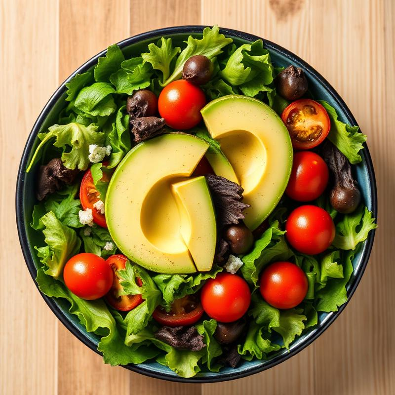

Fresh Garden Salad
Crisp mixed greens with avocado, cherry tomatoes, and a light vinaigrette
15 mins 2 servings Easy
Ingredients
- Mixed salad greens
- 1 ripe avocado, sliced
- 1 cup cherry tomatoes, halved
- 1/4 red onion, thinly sliced
- 3 tbsp olive oil
- 1 tbsp balsamic vinegar
- Salt and pepper to taste
Instructions
- Wash and dry all salad greens thoroughly
- Arrange greens in a large bowl
- Top with sliced avocado, cherry tomatoes, and red onion
- In a small bowl, whisk together olive oil and balsamic vinegar
- Season dressing with salt and pepper
- Drizzle dressing over salad just before serving
- Toss gently and serve immediately